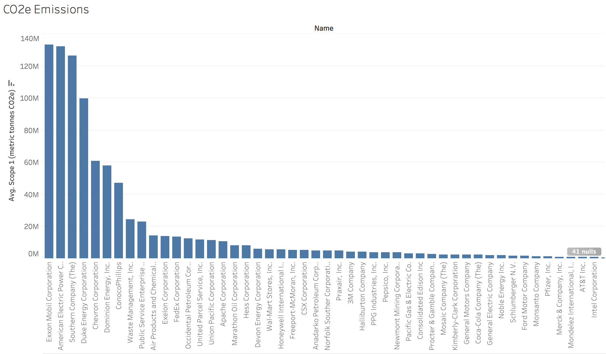

Make Your Money
Make A Statement
Casual investors are looking more and more at the social and environmental impacts of the companies in which they are investing. For these investors, there is not a quick and inexpensive way to understand the environmental, social, and governance (ESG) practices of the companies within their portfolio. Analysis for Socially Responsible Investing (SRI) analysis can be found “for sale”, but in consolidated views, this is offered only to financial institutions or advisors. There are specifically targeted SRI funds, but one fund may excel on one ESG attribute, but err on another. Additionally, if you want to understand ESG attributes for non-SRI funds, investors have to search through numerous sites, often focusing only on those companies that comprise the largest portion of a fund. It can be a considerable time investment for a casual investor.
SRI Funds
The Forum for Sustainable and Responsible Investment,

, is a leading voice for advancing sustainable, responsible, and impact investing across all asset classes. Their mission is to shift invesment practices towards sustainability, focusing on long-term investment and the generation of positive social and environmental impacts. You can read more about them and access their data directly here.
Within our analysis, we are incorporating financial, environmental, social, and governance ratings for 202 funds, as self reported by the fund managers with USSIF.
Forest / Water
Text Decription
Corporate Equality
The Human Rights Campaign (HRC) and the Human Rights Campaign Foundation together serve as America's largest civil rights organization working to achieve LGBTQ equality. By inspiring and engaging individuals and communities, HRC strives to end discrimination against LGBTQ people and realize a world that achieves fundamental fairness and equality for all. Human Rights Campaign Foundation’s Corporate Equality Index is the national benchmarking tool on corporate policies and practices pertinent to lesbian, gay, bisexual and transgender employees. To read more about HRC, click here.
Explore
Embbed sample d3 chart below
<